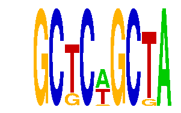

family_7 |
|---|
|  |
| Download PWM |
| Download instances (motifs) |
| Show motif distribution |
Query_ID | Query_Consensus | Subject_Name | Source_DB | Subject_ID | Length | Orientation | Offset | Divergence | Overlap | Subject_Consensus |
|---|
Sequence | Start_position (from start) | Start_position (from end) | Average conservation | Best conservation score | Instance_with_best_CS | Best_Z-score | Instance_with_best_ZS | Strand |
|---|---|---|---|---|---|---|---|---|
| chr15:76851674-76852674 | 533 | 542 | 0.058 | 0.451 | GCTCNGCTA | 14.384297 | GCTCWGCTA | 1 |
| chr4:129448624-129449624 | 44 | 53 | 0.00344444 | 0.016 | GCTCWGCKA | 12.672758 | GCKCWGCTA | 1 |
| chr14:63881391-63882391 | 18 | 27 | 0 | 0 | GCKCWGCTA | 12.672758 | GCKCWGCTA | 1 |
| chr10:96497996-96498996 | 397 | 406 | 0.24 | 0.268 | GCTCNGCTA | 14.384297 | GCTCWGCTA | -1 |
| chr7:119885169-119886169 | 351 | 360 | 0.999111 | 1 | GCKCWGCTA | 12.734484 | GCTCWGCKA | 1 |
| chr10:53056609-53057609 | 500 | 509 | 0.00255556 | 0.015 | GCTCWGCKA | 12.734484 | GCTCWGCKA | 1 |
| chr9:67275816-67276816 | 782 | 791 | 0.0247778 | 0.099 | GCTCNGCTA | 14.384297 | GCTCWGCTA | 1 |
| chr5:122509178-122510178 | 63 | 72 | 0.000555556 | 0.002 | GCKCWGCTA | 12.672758 | GCKCWGCTA | -1 |
| chr8:23618125-23619125 | 631 | 640 | 0.000111111 | 0.001 | GCTCWGCKA | 12.672758 | GCKCWGCTA | 1 |
| chr4:133848968-133849968 | 362 | 371 | 0 | 0 | GCKCWGCTA | 12.734484 | GCTCWGCKA | 1 |
| chr10:53062926-53063926 | 769 | 778 | 0.999778 | 1 | GCTCNGCTA | 15.898185 | GCTCNGCTA | 1 |
| chr11:82724646-82725646 | 653 | 662 | 0.925889 | 1 | GCTCWGCTA | 15.898185 | GCTCNGCTA | 1 |
| chr14:63883016-63884016 | 146 | 155 | 0 | 0 | GCTCWGCTA | 15.898185 | GCTCNGCTA | 1 |
| chr2:17378003-17379003 | 644 | 653 | 0.00522222 | 0.011 | GCTCWGCKA | 12.672758 | GCKCWGCTA | 1 |
| chr17:69530370-69531370 | 240 | 249 | 0 | 0 | GCTCNGCTA | 14.384297 | GCTCWGCTA | 1 |
| chr14:55612225-55613225 | 75 | 84 | 0.000777778 | 0.002 | GCKCWGCTA | 12.672758 | GCKCWGCTA | -1 |
| chr17:12952223-12953223 | 895 | 904 | 0.00111111 | 0.003 | GCKCWGCTA | 12.734484 | GCTCWGCKA | -1 |
| chr11:109514288-109515288 | 346 | 355 | 0.00122222 | 0.004 | GCKCWGCTA | 12.672758 | GCKCWGCTA | -1 |
| chr3:159445053-159446053 | 145 | 154 | 0.0102222 | 0.02 | GCTCWGCKA | 12.734484 | GCTCWGCKA | 1 |